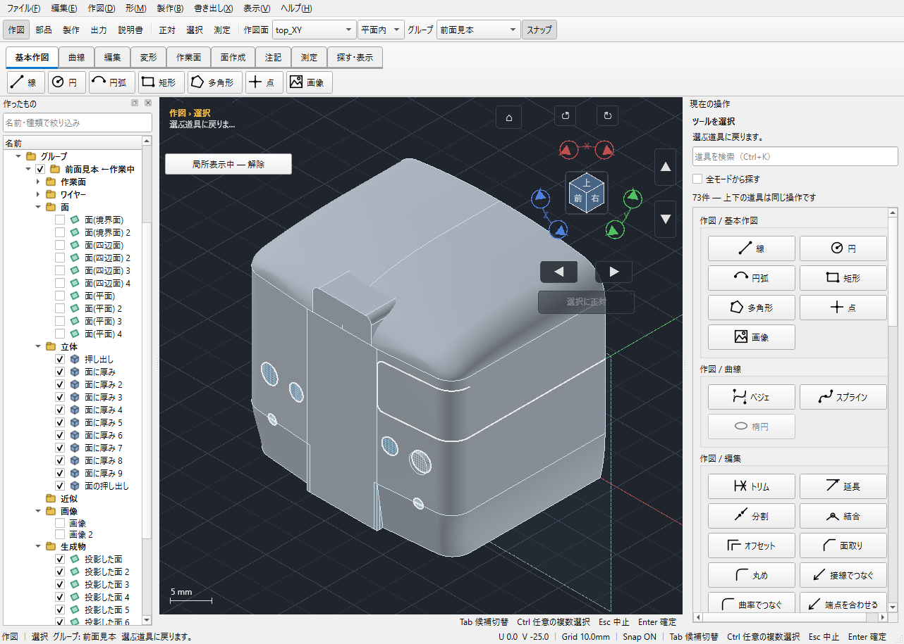

投影したライトを中央面まで伸ばす
対象：115面.kcd2。ライトの投影面から押し出し、終端を車体中央の平面と同じ位置・角度にする手順です。
今回の重要設定：「終端の平面を延長して使う」をオン。
ライトは中央面の有限な外周の外にあります。中央面を延長した平面まで押し出すことで、ライトの位置でも終端を作れます。
2026年10月16日の配布版自動操作試験で保存した実アプリ画像です。使用版：20261015T131724Z-bc2f4519。手順を読みやすくするため、関連する複数の入力を各段階にまとめています。各ボタンを手動でクリックした記録ではありません。
1 ライトの投影面を用意する
すでにライトを「面＋ワイヤー」で投影している場合は、手順2へ進みます。線だけを投影している場合、この例と同じ手順で再現するには、投影の出力を「面＋ワイヤー」にして確定してください。
下の画像は試験で6個のライトを投影した段階です。押し出すのは、このうち右側のライトの投影面1枚です。

2 押し出すライトと設定を指定する
- 上部の「部品」→「押し出し」を開きます。
- 右ペインの「① 押す面／輪郭」の「選ぶ・追加」を押し、ライトの小さな投影面を選びます。左ペインなら「生成物」内の該当する「投影した面」を使います。車体全体の面を選ばないようにしてください。
- 下表の設定にします。項目が見えない場合は右ペインをスクロールします。
| 項目 | このモデルでの設定 |
|---|---|
| 範囲 | 選んだ面まで |
| 方向 | 数値で決める |
| 向き x y z | 0、−1、0（この115面.kcd2で試験した方向） |
| 終端オフセット | 0.000 mm |
| 終端面の向き | 自動（範囲に合わせる） |
| 終端の平面を延長して使う | チェックを入れる |
| 出力 | ソリッドのみ |
今回は新しいライト部品を作るので「② 足す／引く相手」は未選択のままです。方向の数値は距離ではありません。別の向きのモデルでは、中央面へ向かう方向に変更してください。
3 中央面を3Dビューから選ぶ
- 「③ 終端の面・線・点」の「3Dビューで終端面を選ぶ」を押します。
- ボタンが「3Dの面をクリック…」になったら、3Dビューの中央の平らな面にカーソルを合わせます。
- 目的の面が緑色になっていることを確認してクリックします。

「① 押す面／輪郭」で中央面を選び直すのではありません。必ず「③」の終端面選択ボタンから選びます。
4 プレビューと終端の角度を確認する
中央面をクリックすると「③」に選んだフェイス名が入り、ライトの押し出しプレビューが出ます。出ない場合は「再プレビュー」を押します。

「選んだ面まで」＋「自動」なら、終端は中央面と同じ角度になります。この例では向きの基準面をもう一度選ぶ必要はありません。別の面の角度にしたい場合だけ「選んだ面と平行」に切り替え、「3Dビューで向きの基準面を選ぶ」から選びます。
中央面より先へ出したい場合は「終端オフセット」を正、中央面の手前で止めたい場合は負にします。これは押し出し方向に沿う距離です。
「終端面に届かない場所があります」と出る場合は、まず「終端の平面を延長して使う」のチェックと、中央の平らなフェイスを選んだかを確認してください。この延長設定は曲面には使えません。
5 確定し、完成形を確認する
プレビューを確認したら「確定 Enter」を押します。新しいライトのソリッドが作られます。
